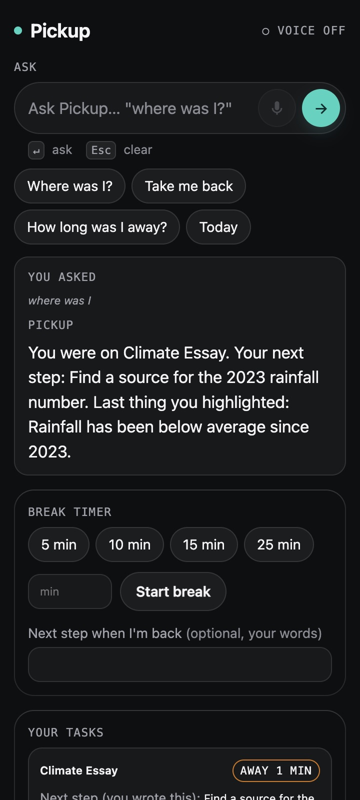
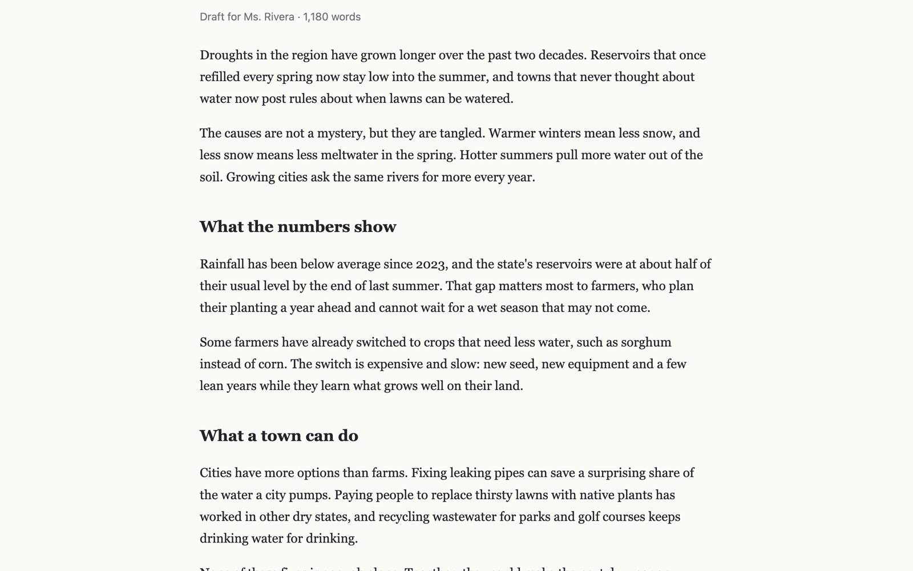
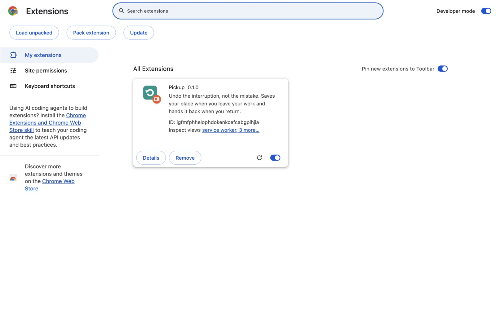

Undo the interruption, not the mistake.
A Chrome extension that saves your place when you get pulled away and hands it back when you return.
Free · Load unpacked · No account · Nothing leaves your computer

The problem
You open a tab to check one thing.
Twenty minutes later you're somewhere else.
Getting back means remembering where you were.
For context, not a promise: Gloria Mark's field studies of office workers found that interrupted work was typically resumed about 23 minutes later, often after two other tasks in between. Source: Gallup Business Journal interview with Gloria Mark.
How it works
-

1 Leave
When you switch away from a work page, Pickup saves where you were: the page, your scroll position and what you last highlighted. Press Alt+P first if you want to leave a next step in your own words.
-

2 Drift
If you wrote a next step, Pickup can send one quiet reminder after a few minutes away. One per break, never more, and it never blocks a site. Ask the Pickup panel "where was I?" any time.
-
3 Return
Come back and a small card shows what you were doing, how long you were gone, and the next step you wrote. Every line is something you did or wrote.
-

4 Resume
Press Enter and you're back at the exact spot. Press T to tidy the tabs you opened while away into a collapsed "Later" group. Nothing is closed.
What's in v1.0
Return card + Resume
Your task, time away, your next step and last highlight. Enter jumps back.
Park with Alt+P
Leave a next step in your own words before you go.
Task tab groups
Each task is a named Chrome tab group, so its tabs stay together.
Tidy
Tabs from the break go into a collapsed "Later" group. Nothing is closed.
Drift nudge
One reminder per break, only if you wrote a next step.
Alt+R from anywhere
Jump back to your task from any tab.
"Make this my next step"
Right-click a sentence on a work page to save it as your next step.
Wrap up → Start here
Save your place at night; get one "Start here" reminder the next morning.
Pickup panel
Ask "where was I?", set a break timer ("back in 10"), and see your tasks.
"Hey Pickup" voice
Optional and off by default. Speech is recognised on your device.
Privacy
- Everything stays in Chrome's local storage on your computer.
- No accounts, no servers, no analytics.
- Pickup stores a highlight of up to 200 characters, never the page's text.
- Voice is recognised on your device, and no audio is kept.
- One button deletes everything Pickup has stored.
Honest limits
- Pickup can't see your phone. It only knows what happens in Chrome.
- It can't read the text of a Google Doc, so in Docs it saves your place but not your highlight.
- "Time to first interaction" (your first click, key or scroll back on the task) is a stand-in for getting back into work, not a measure of focus.
Evidence
Results from our 3-person pilot are posted Saturday.
Install in 4 steps
- Download the zip and unzip it.
- Open
chrome://extensionsin Chrome. - Turn on Developer mode (top right).
- Click Load unpacked and pick the unzipped folder.

Try it without your own data: open the dashboard and click Load sample data.
Demo
The 6-minute demo video is posted Saturday.
Next
- Classmate pilot. A bigger, longer study with students in our school.
- Edge version. The same extension for Microsoft Edge.
- On-device suggestions. Ideas for your next step, always labelled as suggestions, never stored as yours.
- Desktop companion. Saving your place outside the browser too.